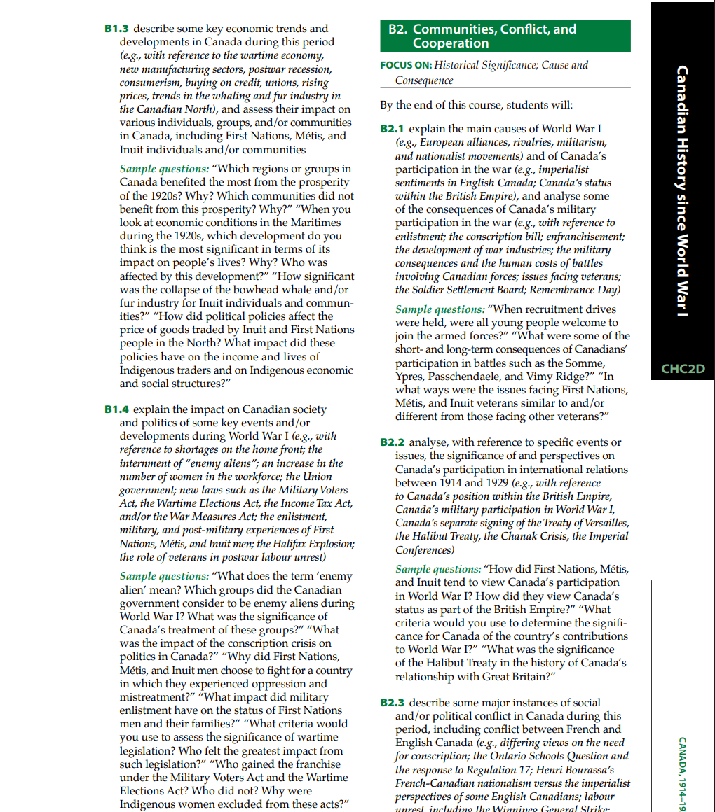

Canadian War Museum
By: Trevor Boodhoo

Classroom Usage and Application
For grade 10 history, the digital tool I have chosen is the Canadian War Museum website. Having the ability to interact with historical artifacts and try to immerse yourself in the events that occurred is an essential component in understanding what happened on an emotional and academic level. This does have numerous difficulties, as the Canadian War Museum is inaccessible because it is in Ottawa, and field trips to places such as the Archives of Ontario are still difficult due to costs that some students may not be able to afford. With that being said, the Canadian War Museum website offers an interactive experience that brings digital content into the classroom, allowing students to connect with primary sources and learn through interactive games and activities. For example, the game “Over The Top” enables students to immerse themselves in the lives of soldiers in the trenches during the First World War. Through their decisions throughout the game and the prompts presented, they are able to develop their understanding of the war and apply it in their decision-making to learn the impact it had on Canadian lives. Using this website and its sources such as the WW1 exhibition and interactive game serves a beneficial purpose in the classroom following overall expectations such as A1: Historical Inquiry: use the historical inquiry process and the concepts of historical thinking when investigating aspects of Canadian history since 1914, and A2: Developing Transferable Skills: apply in everyday contexts skills developed through historical investigation, and identify some careers in which these skills might be useful. The website is free, and students would need to use either their own device or a Chromebook, as well as a strong WI-FI connection, to access the exhibitions and games. This can also be beneficial for students who have access to a device and WI-FI at home, as they can continue to interact with the material. Whereas students who do not have access at home can continue accessing it at school or a local library.
Pedagogical Rationale and Curriculum Alignment
Utilizing games in the classroom can be highly beneficial for students in this age group, as the generation we are teaching grew up in an environment where technology was readily accessible, and its impact has been quite significant in their lives. Zirawaga et al. (2017) discuss the necessity for meeting students where they are and to connect learning to who they are, which follows a similar structure to the HRL framework, as using this website and game enables an emphasis on skills to be built regarding contextualizing the lives of soldiers in the trenches in a manner that maintains student connection and participation. Moreover, when providing a game to students, the lesson and activity are relatively low risk because the game requires students to only click on the outcomes and interact with the prompts. These choices are entirely up to the student and make them feel less pressured and more comfortable participating in the activity and gaining a better understanding of the subject matter. Similarly, using their online exhibitions can be extremely beneficial, while limiting mitigating factors that would have occurred with field trips. Utilizing online museum exhibitions and materials, as per Shalgimbekov et al. (2025), provides easier access to information for students. It enables them to critically examine online material, making it more “accessible, engaging, and effective” (Shalgimbekov et al., 2025, p.798). This can be seen in the results of their research, as 82% of students expressed the belief that virtual museums provide sufficient information to learn about historical events (Shalgimbekov et al., 2025). Looking at the UDL principles, having multiple means of representation is extremely important for diversifying how one teaches, and by using this digital source, students are exposed to different ways to comprehend the material being discussed.
Looking through the curriculum, grade 10 history covers a large portion of history, as the course begins in 1914 and ends in the present day. Being able to apply and critically analyze text from a historical perspective to understand Canadian history is one of the main components of the course. Teaching students about historical thinking and understanding the various components of Canadian history can be done through interactive tools such as. For example, A1.1, A1.2, and A1.3 ask students to begin looking at both primary and secondary sources, to differentiate between the two and understand their credibility, and to begin questioning the events and developments. These curriculum expectations can be met through the use of the website, which provides material to develop students' understanding of the exhibition's primary sources and to question the events of the war and its impact on Canadian soldiers through the video game. Moreover, looking at this from a unit on the First World War, using this website would be capable of covering aspects of conflict (B2.1), its impact on Canadian society (B1.4), as well as analyzing Canadian statistics and texts (B1.1).
Application in Different Teaching Contexts
The benefit of using this website is that it provides various exhibitions on the aftermath of the First World War. This allows students to engage with primary material on the Second World War (C2.3) and with virtual tours that can help them begin to understand the Cold War (D1.5, D2.4) and interact with material from both. Using this website and its sources such as the WW1 exhibition and interactive game serves a beneficial purpose in the classroom following overall expectations such as A1: Historical Inquiry: use the historical inquiry process and the concepts of historical thinking when investigating aspects of Canadian history since 1914, and A2: Developing Transferable Skills: apply in everyday contexts skills developed through historical investigation, and identify some careers in which these skills might be useful. Similarly, this could also be used for other Canadian history courses, such as Canada: History, Identity, and Culture.
References
Shalgimbekov, A., Nauryzbayeva, E., & Gallyamova, Z. (2025). The effectiveness of virtual museums in enhancing student interest in history learning. Journal of Education Culture and Society, 16(1), 793–812. https://doi.org/10.15503/jecs2025.2.793.812
Zirawaga, V. S., Idowu, A., & Maduku, T. (2017). Gaming in Education: Using games as a support tool to teach history. VNU Journal of Science: Natural Sciences and Technology (Vietnam National University), 8(15), 55–64. http://iiste.org/Journals/index.php/JEP/article/view/37034